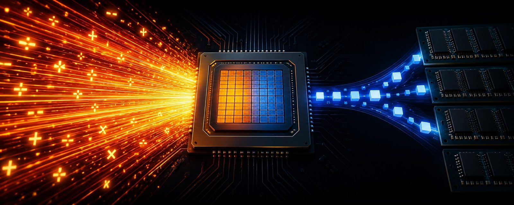
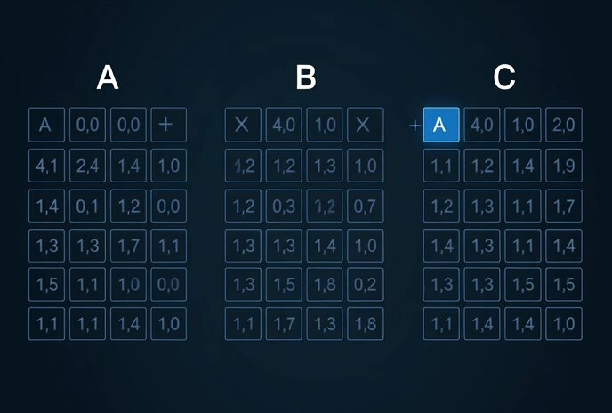
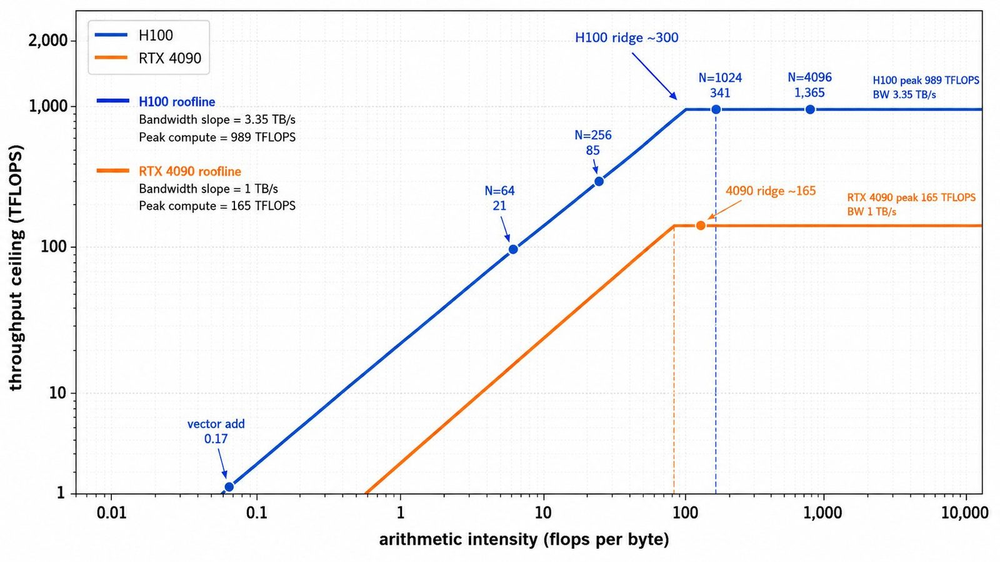

Two speeds of a GPU

GPUs have two speeds
A GPU has two speeds, not one. It has a speed for math (how fast it can add and multiply and generally push numbers around) and a separate speed for moving bytes between its memory and the parts that do the math. Those two speeds are wildly out of balance. Compute grew a lot faster than memory bandwidth over the last decade, and on modern GPUs the math side runs circles around the memory side by ratios that will look absurd when you see them.
That mismatch shows up everywhere. It's why a plain vector add uses only a tiny fraction of a GPU's mathematical power, even though it may finish quickly. It's why chaining two elementwise operations is slower than doing them together, even though the arithmetic is identical. It's why people care about kernel fusion and quantization and half a dozen other things you've heard about.
By the end of this piece you'll be able to look at almost any PyTorch op and make a good guess about which of the two ceilings it's hitting. Not from measuring, from the shape of the code. That's a small superpower, and it turns "why is this slow" from a mystery into a diagnostic.
A chef, a runner, and a very long wait
Every GPU spec sheet leads with two headline numbers. One for how fast the chip can do math. One for how fast it can move bytes between its memory and the parts that do the math.
Those two numbers are independent ceilings. For large enough kernels, one of them usually becomes the dominant limit. Which one depends entirely on the ratio of math to memory movement in the code you wrote.
Imagine a kitchen with a chef and a runner. The chef is extremely fast. They can chop a hundred vegetables per minute at their cutting board, but the chef doesn't fetch their own ingredients. The runner walks to the storeroom at the back, grabs an ingredient, and walks back. Each round trip takes a minute. So the kitchen produces one chopped vegetable per minute, and in between the chef stands at their board and waits.
The rate at which the kitchen produces food isn't set by how fast the chef works. It's set by how fast the runner fetches. You paid for a chef who could do a hundred vegetables a minute and you're getting one. The chef sits idle because the ingredients haven't arrived.
That's a GPU today, at almost every scale. The compute side (the chef) is astonishingly fast. The memory side (the runner) is much slower. For most of the code you'll write, the chef finishes their share of the work in less time than the runner takes to fetch the data, and then they wait.
Now sit with a twist. Suppose the recipe changes. Each vegetable now takes the chef a full minute of careful dicing instead of one quick chop. The runner is unchanged: still one trip per minute, still one ingredient at a time. But every ingredient the runner drops off now represents a full minute of actual work. The chef stops standing around. They are working the whole minute the runner is walking, and the kitchen's output shifts from being limited by the runner to being limited by the chef.
Same runner. Same chef. What changed is how much work each ingredient represents. The bottleneck flipped. Hold onto that idea. It comes back later, when we discover that a matrix multiply does way more math per byte fetched than a plain vector add does, and that fact is why they land on opposite sides of the same ceiling.
How much math can a GPU actually do?
A flop (floating-point operation) is one arithmetic step on numbers that carry fractions (like 3.14 or 1e-9), as opposed to plain integers. One multiply. One add. That's it. The name comes from "floating-point" because floats are the number format GPUs mostly work in.
By convention, a multiply-and-add combined counts as 2 flops even when the chip does both at once in a single hardware step (which is what happens all the time inside matmuls). Every spec sheet uses this convention, and it's why the 2N³ matmul count comes out the way it does later on.
TFLOPS is trillions of flops per second. When a spec sheet says "H100 does 989 TFLOPS," it means the H100 can, at peak, execute 989 trillion arithmetic operations every second.
989 trillion. Every second. In the three hundred milliseconds it takes your eye to blink, an H100 can do about 300 trillion arithmetic operations. In the time it takes to say the word "flop" out loud, more math than most humans do in a lifetime, done thousands of times over, on one chip.
Two cards to have in mind for the rest of this piece:
- H100 SXM5 (a datacenter card): about 989 TFLOPS.
- RTX 4090 (a high-end consumer card): about 165 TFLOPS.
Both numbers assume a compact numeric format called BF16, which is what modern training and inference actually use. Don't worry about the details of the format just know that any big TFLOPS number on a spec sheet is quoted at BF16 or something similar.
And "peak" means peak. It's the top speed under ideal conditions, with the right kind of op on the right hardware unit. Most real kernels sit well below their peak, and nothing in this article is going to actually hit 989 TFLOPS. But the peak is what defines the ceiling of the math side, so it's the number we work with.
How fast can you feed a GPU?
Bandwidth is how many bytes per second the GPU can move between its memory and the parts of the chip that do the math. Not how much memory it has (that's a separate number). This is throughput, bytes flowing per second.
The unit usually is GB/s (gigabytes per second) or, on serious GPUs, TB/s (trillions of bytes per second). "H100 has 3.35 TB/s of memory bandwidth" means the chip can move up to 3.35 trillion bytes between its memory and its compute cores every second.
A typical photo on a phone is a few megabytes. At 3.35 TB/s, an H100 could in principle move about 800,000 photos every second, if photos were all it did.
Same two cards, bandwidth this time:
- H100 SXM5: about 3.35 TB/s (using HBM3, the memory chips that sit right next to the GPU on datacenter cards).
- RTX 4090: about 1 TB/s (using GDDR6X, the consumer-card equivalent).
Both cards, both numbers, side by side:
| Card | Peak Compute (BF16) | Peak Bandwidth | Ridge Ratio |
|---|---|---|---|
| H100 SXM5 | 989 TFLOPS | 3.35 TB/s | ~295 FLOPs/byte (~300) |
| RTX 4090 | 165 TFLOPS | 1.00 TB/s | ~165 FLOPs/byte |
There's one number hiding in that table that pretty much explains the rest of this article. Take the H100's peak compute and divide it by its peak bandwidth: 989 trillion flops per second, over 3.35 trillion bytes per second, works out to about 295 flops per byte.
Round to 300. In the time it takes an H100 to move ONE byte from memory, it can do about 300 arithmetic operations. On the RTX 4090, the same ratio is about 165 ops per byte. That's how badly the kitchen is tilted toward the chef. Now we can actually count.
Why a vector add barely uses the chip
Time to count something real. Take a simple vector add: c = a + b, on length-1M BF16 tensors. When PyTorch runs this on a GPU, the actual work happens inside a kernel, like one function call the whole chip executes together. This particular kernel reads a, reads b, adds pairs of elements, and writes the result to c.
Count the memory traffic first. Each tensor is 2 MB (1 million BF16 elements at 2 bytes each). Read a: 2 MB. Read b: 2 MB. Write c: 2 MB. Total: 6 MB moving between memory and the chip.
Now count the math. One million elements, one add per element. 1 million flops total.
Now imagine two extreme worlds. In one, only compute matters and memory is free. In the other, only memory matters and compute is free. How long would this vector add take in each?
- Compute-only: At 989 TFLOPS, 1,000,000 flops ÷ 989,000,000,000,000 flops/sec ≈ 1 nanosecond. (Elementwise ops run on slower plain ALUs, so real compute time is ≈10 ns, but still trivial).
- Memory-only: At 3.35 TB/s, moving 6 MB takes 6,000,000 bytes ÷ 3,350,000,000,000 bytes/sec ≈ 1.8 microseconds.
In a real kernel, memory movement and compute overlap; total throughput cannot exceed either ceiling, so the larger of the two idealized times sets the limit. Memory is ~1,800× slower. That means the compute side is drastically underutilized, sitting well below its own ceiling because bytes aren't arriving fast enough to keep it busy.
Same story on the RTX 4090: compute-only about 6 nanoseconds, memory-only about 6 microseconds, memory wins by about 1,000×.
There's a name for this pattern. When a kernel's runtime is set by moving bytes rather than doing arithmetic, it is memory-bound.
Most large elementwise operations in your PyTorch code are memory-bound: adds, multiplies, relus, standalone softmaxes, and normalization layers. Anything that reads a tensor, does a little math per element, and writes a tensor.
This is also why it matters when tools like torch.compile fuse chained memory-bound ops into a single kernel. Every time two ops run as separate kernels, PyTorch writes the intermediate result out to GPU memory and then reads it back in for the next op. That round trip is pure cost. Fusing the ops into one kernel skips the intermediate write and read entirely, cutting time on the ceiling you were actually hitting.
When the chef finally has enough to do
Not everything is memory-bound. Some kernels do enough math per byte to actually keep the compute side busy. The obvious example is the one that dominates every serious neural network: matrix multiplication.
If you multiply an N×N matrix A by an N×N matrix B to produce an N×N matrix C, each output cell of C is a dot product of one row of A and one column of B. Walk across the row of A and down the matching column of B, multiplying pairs of elements as you go, then sum all the products. That single number fills one cell of C.
Since there are N rows in A and N columns in B, there are N × N = N² output cells to fill in C. Each cell takes N multiplies and N-1 adds (about 2N flops per cell). Times N² cells, a full matmul is roughly 2N³ flops total.
The memory side is smaller, assuming the kernel is written well: read A (N² elements), read B (N² elements), write C (N² elements). That's 3N² elements crossing GPU memory, times the size of each element in bytes (2 bytes for BF16), giving 6N² bytes.
Notice the shapes:
- Math grows as N³
- Memory grows as N²
Every time you double N, math grows 8× but memory only grows 4×. The ratio of math to memory grows with N. That's the whole reason a matmul can escape the memory ceiling.

Let's do a real example. A 4096×4096 BF16 matmul:
- Memory: Each matrix is 4096² × 2 bytes ≈ 32 MB. Read
A(32 MB) + ReadB(32 MB) + WriteC(32 MB) = 96 MB. - Math: 2 × 4096³ ≈ 137 billion flops (137 GFLOPs).
Timing on the H100:
- Compute-only time: 137 GFLOPs ÷ 989 TFLOPS ≈ 138 microseconds.
- Memory-only time: 96 MB ÷ 3.35 TB/s ≈ 29 microseconds.
The math side is now the slower side, by about 5×. Doing 137 billion flops takes longer than moving 96 MB, so the kernel spends most of its time doing arithmetic and the memory side is the one that finishes early and waits.
This kernel is compute-bound. Runtime is set by math throughput, not memory throughput.
That flip has a real name too. The ratio of flops to bytes for a given kernel is called its arithmetic intensity. Higher intensity means more math per byte moved:
- The vector add had intensity of 1 million flops ÷ 6 million bytes ≈ 0.17 flops per byte.
- The 4096 matmul has 137 billion flops ÷ 96 million bytes ≈ 1,400 flops per byte.
Four orders of magnitude apart. Which is why they land on opposite sides of the ceiling.
Same op but different shape
A matmul isn't inherently compute-bound. Its arithmetic intensity depends on the shape of the matrices. For an N×N BF16 matmul:
- Flops: 2N³
- Bytes: 6N²
- Arithmetic Intensity: 2N³ ÷ 6N² = N / 3 flops per byte
Using the H100's ridge of about 300 flops per byte as reference:
- N = 64: Intensity ≈ 64 / 3 ≈ 21 flops per byte. Way below 300. This matmul is memory-bound.
- N = 4096: Intensity ≈ 4096 / 3 ≈ 1,365 flops per byte. Way above 300. Squarely compute-bound.
Same operation. Same code, same math. Only the size of the matrices changed, and the kernel moved from one ceiling to the other.
(Note: The N/3 number assumes each byte gets loaded from GPU memory exactly once. Well-written matmul kernels achieve this by tiling chunks into fast on-chip SRAM/shared memory and reusing them across operations before eviction.)
Both roofs on one chart: The Roofline Model
We've now counted two shapes: vector add at intensity 0.17 (deeply memory-bound), and 4096 matmul at intensity 1,400 (deeply compute-bound). Put all of this on a chart and it looks like the picture below.

What you're looking at is a diagonal line rising up until it hits a flat ceiling:
- The memory roof (diagonal): As arithmetic intensity increases, throughput rises because you feed the compute side faster.
- The compute roof (flat): Above a certain intensity, the hardware compute units are saturated. The ceiling stops rising no matter how much math per byte you do, because the chip cannot do math faster than its peak.
Anything left of the ridge is memory-bound. Anything right of the ridge is compute-bound.
The whole picture is called the roofline model. The point where the diagonal meets the flat is the ridge point (or balance point). Ridge point is a property of the machine, not of your code:
- H100 SXM5: Ridge sits at ≈ 300 flops per byte.
- RTX 4090: Ridge sits at ≈ 165 flops per byte.
Where your kernel lives on the x-axis is set by the algorithm and tensor dimensions you wrote. Where the roof caps your throughput is set by the hardware.
Two ceilings, one ratio
If you want everything in one paragraph here it is: Your GPU has two independent ceilings: one for how fast it can do math, one for how fast it can move bytes between its memory and the parts that do the math. On modern hardware those two speeds are wildly out of balance, with math being much faster. Which ceiling a given kernel hits is decided by its arithmetic intensity, the ratio of math to bytes in the code. Kernels below the ridge point are memory-bound. Kernels above are compute-bound. The ridge point is a property of the machine, not your code.
The next time you look at a slow PyTorch op, you can ask "how much math is this doing per byte it moves?" and get a decent diagnostic from the shape of the code alone. Two ceilings. One ratio. The shape of your kernel decides where you sit.